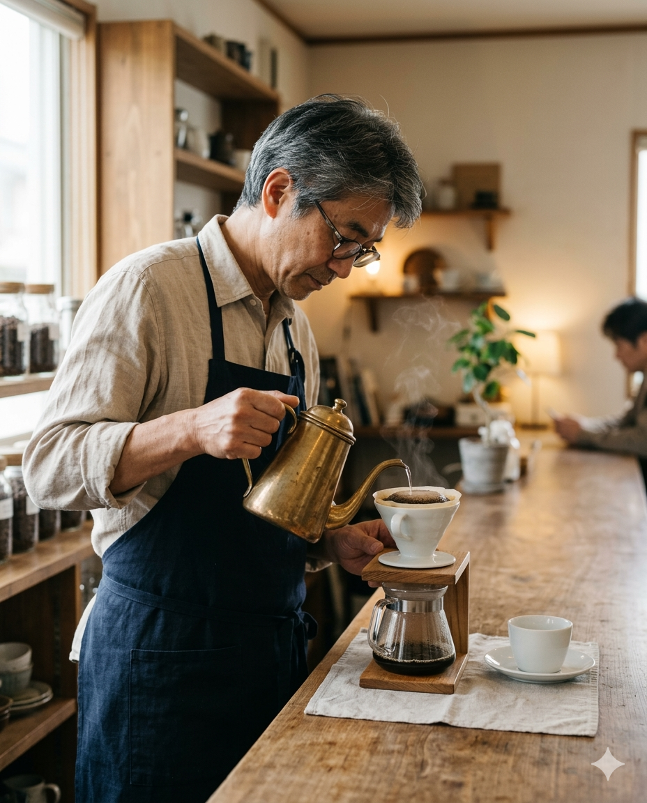

日常に、 おいしい深呼吸を。
About
SUNABA CAFE（すなばカフェ）
1960年創業。駅の近くで、ナポリタンとコーヒーを肩ひじ張らずに楽しめる店。喫茶店のぬくもりはそのままに、今の気分に合う軽やかさが心地よくなじむ。
- 1960 年創業
- 駅近 ふらっと寄れる立地
- 40席 全席禁煙
- Wi-Fi コンセントあり
Master & Philosophy
一杯の所作に、店の空気が宿る。

カウンターに立つマスターが大事にしているのは、豆の個性を静かに引き出し、食事のあとまで気持ちよく続く一杯にすること。
湯の温度、注ぐ速さ、香りの立ち方をその日の空気に合わせて整えながら、いつもの一杯をこの店らしい深呼吸の時間に変えていく。昔ながらの喫茶店の落ち着きに、今の感覚で通いたくなる軽やかさを重ねる。それが SUNABA CAFE の変わらない姿勢。
- 豆の輪郭
- 食事と合わせても重たくなりすぎない、やわらかなコクときれいな後味。
- 湯の所作
- 気温や湿度を見ながら、湯温と注ぐスピードを細かく整えて香りと甘みを引き出す。
- カウンター
- 会話したい日も静かに過ごしたい日も、自然に居場所が見つかる距離感。
Signature Menu
気分に寄り添う、定番の味わい

Space & Facility
静かな時間を過ごせる、ゆとりある店内


- Wi-Fi
- コンセント
- 40席 / 全席禁煙
- 駐車場あり
- テイクアウト可
- 現金 / クレジットカード / QR決済
Commitment
また立ち寄りたくなる理由
昔ながらの喫茶店の温かさを土台に、光や余白、器、味わいまで丁寧に整える。気づけばまた立ち寄りたくなる、そんな空気感を大切にしている。
Access & Information
店舗情報

- Shop
- SUNABA CAFE
- Founded
- 1960年創業
- Address
- 〒794-0015 愛媛県今治市常盤町4-8-18 しまなみイノベーションビル2階
- Hours
- Open 9:00 - Close 20:00
- Closed
- Closed on Tuesday
- Payment
- Cash / Credit / QR
- Seat
- 40 seats / Non-smoking / Parking available
- Phone
- 070××××××××
初めての来店は Google Maps から場所をご確認ください。メニューはこのページでそのまま確認できます。
Instagramは準備中です
公開までは、このページのメニューと店舗情報をご利用ください。最新情報の発信は準備が整い次第ご案内します。
※ QRはダミー画像です。